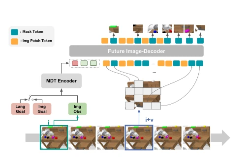
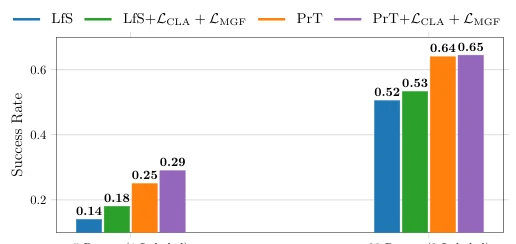
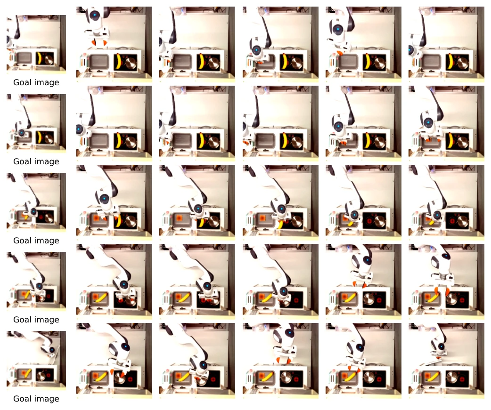
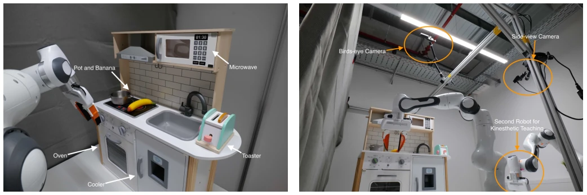
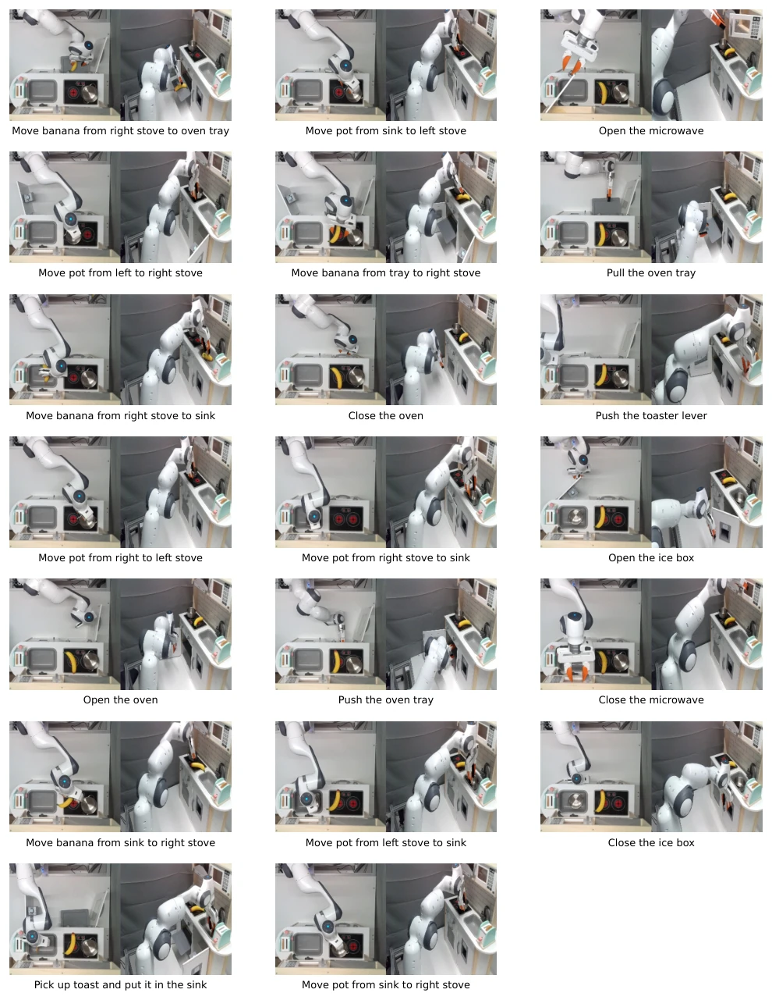
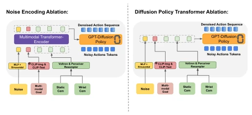

Fig. 3: Overview of the different environments used to test MDT: (Left) CALVIN Benchmark consisting of four environments each with unique positions and textures for slider, drawer, LED, and lightbulb. (Middle) Overview of the different tasks and scene diversity in the LIBERO benchmark, which is divided into 5 different task suites. (Right) Example tasks from the real robot experiments at a toy kitchen, where models are tested after training on partially labeled play data.
Fig. 1: (Left) Overview of the proposed multimodal Transformer-Encoder-Decoder Diffusion Policy used in MDT. (Right) Specialized Diffusion Transformer Block for the Denoising of the Action Sequence. MDT learns a goal-conditioned latent state representation from multiple image observations and multimodal goals. The camera images are processed either via frozen Voltron Encoders with a Perceiver or ResNets. The separate GPT denoising module iteratively denoises an action sequence of 10 steps with a Transformer Decoder with Causal Attention. It consists of several Denoising Blocks, as visualized on the right side. These blocks process noisy action tokens with self-attention and fuse the conditioning information from the latent state representation via cross-attention. MDT applies adaLN conditi

Fig. 2: The Masked Generative Foresight Auxiliary Task enhances the MDT model. It starts by encoding the current observation and goal using the MDT Encoder. The resulting latent state representations then serve as conditional inputs for the Future Image-Decoder. This decoder receives encoded patches of future camera images along with mask tokens. Its task is to reconstruct the occluded patches in future frames.
Fig. 4: Study on the performance of our proposed Masked Generative Foresight Loss and the Contrastive Latent Align- ment Loss for our proposed MDT policy. We analyse the impact of both auxiliary tasks on the ABCD CALVIN chal- lenge. The results show the average rollout length over 1000 instruction chains averaged over 3 seeds.

Fig. 5: Study on the performance of our proposed MGF and CLA objectives for pretraining on action-free data. We pretrain MDT on LIBERO-90 with the objectives and test the average performance on all LIBERO-Long tasks with different number of demonstrations. The results show the success rate averaged over 20 rollouts for all 10 tasks and 3 seeds. LfS refers to trained from scratch and PrT are all pretrained models.

Fig. 9: Real Robot rollouts with goal image conditioning. The first column shows the goal image used for the rollout. 4 out of 6 tasks are successful. The robot fails to open the oven door and opens the ice box instead.
其他图片Other Figures

Fig. 6: Overview of the real robot kitchens setup. The left image shows the play kitchen with all its objects, while the right image shows the cameras and second robot used for data collection with our robot used for teleoperation.

Fig. 7: Overview of the 20 tasks recorded during play from the both camera perspectives. We test our policies on these tasks during evaluation after training on a partially labeled dataset.

Fig. 8: Overview of the two Diffusion Transformer Baseline Architectures used for the Ablation Study. The first variant uses a transformer encoder but also processes the noise as a token. The second one is the Transformer Diffusion policy presented in Chi et al. [6] without any encoder.